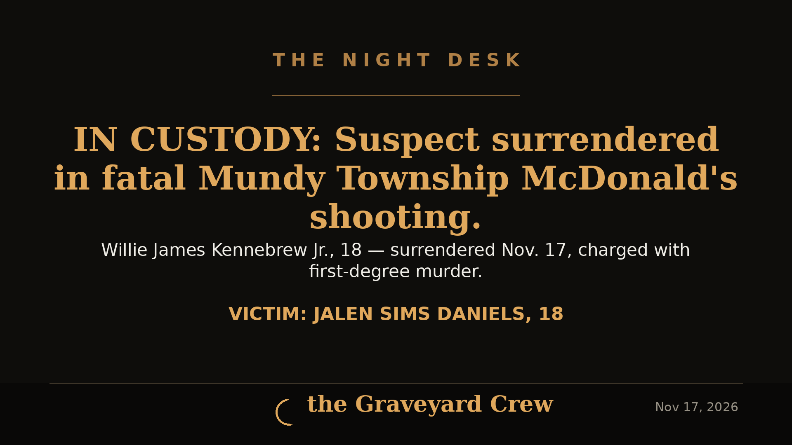

November 17, 2026 · 1 min read
In custody — suspect surrenders in fatal Mundy Township McDonald's shooting

Headline card by The Night Desk
In custody — suspect surrenders in fatal Mundy Township McDonald's shooting
The suspect in the fatal shooting at a Mundy Township McDonald's is in custody.
Willie James Kennebrew Jr. surrendered to Genesee County Sheriff's deputies on Tuesday, Nov. 17, five days after the shooting that occurred around 8:40 a.m. Thursday, Nov. 12, at the McDonald's at 6015 Hill 23 Dr.
The charges
Genesee County Prosecutor David Leyton has charged Kennebrew, 18, with:
- First-degree premeditated murder
- Carrying a concealed weapon — a felony punishable by up to five years in prison
- Use of a firearm during the commission of a felony — a felony that adds two years to the total sentence
Because Kennebrew is only 18 years old, the first-degree murder charge carries a penalty of 40 to 60 years in prison, rather than life, Leyton said during a press conference Tuesday afternoon.
The victim
Kennebrew is accused of killing Jalen Sims Daniels, an 18-year-old McDonald's employee.
Metro Police Authority Chief Mike Murphy said the shooting was a "targeted, isolated event" and there was no threat to the general public.
Investigators have not released a motive for the shooting or indicated how the victim and suspect may have known each other. Murphy said the investigation is ongoing.
Source: Genesee County View, Nov. 17, 2026.
Source: Genesee County View — read the original report
← Back to latest stories